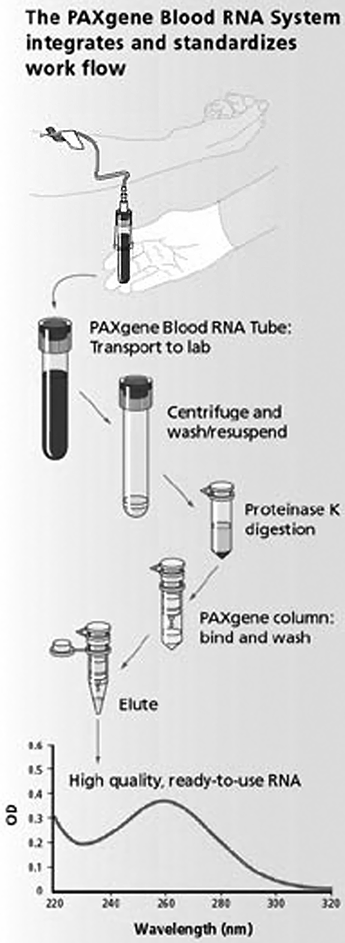

Recolección de sangre con tubo paxgene™
INSTRUCCIONES DE USO:
|
1- Asegúrese de tener el material listo: |
|
|
a) Tubo PAXgene™. b) Tubo BD Vacutainer® de descarte. c) Holder. b) Equipo alado Safety Lok™. |
|
|
2- Si sólo se va a drenar el tubo 2a- Si drenará más tubos, el tubo PAXgene™ va al final de la toma. |
|
|
3- Realice la punción con un equipo alado para drenar el tubo |
|
|
4- Coloque el tubo PAXgene™ en posición vertical debajo del brazo del paciente. Espere 10 segundos y retire el tubo hasta que haya acabado de drenar |
|
|
5- Invierta suavemente el tubo PAXgene™ de 8 a 10 veces. Almacene la muestra en el tubo PAXgene™ a temperatura ambiente (18-22°C) |
Flujos de Trabajo
RNA

Pruebas especiales
|
Código |
Clave SSA |
Aditivo |
Tamaño |
Volumen |
Tapón |
|
362788 |
080.909.6597 |
EDTA K2 y gel separador |
13×100 mm |
5 ml |
Blanco Hemogard* |
|
362760 |
– |
Citrato de sodio y gel separador |
13×100 mm |
4 ml |
Azul–Negro convencional |
|
362753 |
– |
Heparina de sodio y gel separador |
16×125 mm |
8 ml |
Verde–Rojo convencional |
|
362761 |
– |
Citrato de sodio y gel separador |
16×125 mm |
8 ml |
Azul–Negro convencional |
|
366455 |
– |
P100 Sistema para recolección y estabilización de proteínas en plasma |
Kit con 20 pruebas |
– |
– |
|
366473 |
– |
P700 Sistema para toma y recolección de sangre para preservación y estabilización de proteína GLP–1 |
Kit con 12 pruebas |
– |
– |
|
762165 |
– |
Estabilización de RNA celular obtenido de sangre completa |
16×100 mm |
2.5 ml |
Translúcido Hemogard* |
DATOS COMPLEMENTARIOS: Para mayor información sobre asesoría técnica llamar a:
BECTON DICKINSON DE MÉXICO, S. A. de C. V.
Teléfono: (55) 5999-8200.
Directo: (55) 5999-8360.
® Marca registrada
www.bd.com/mx